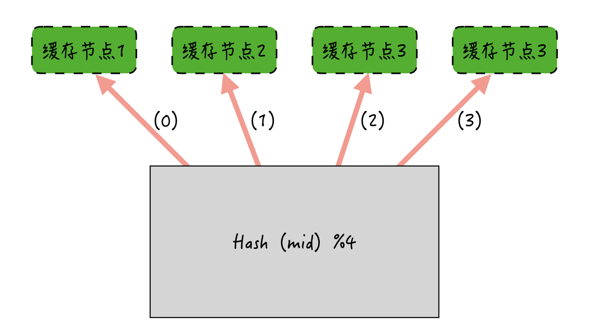
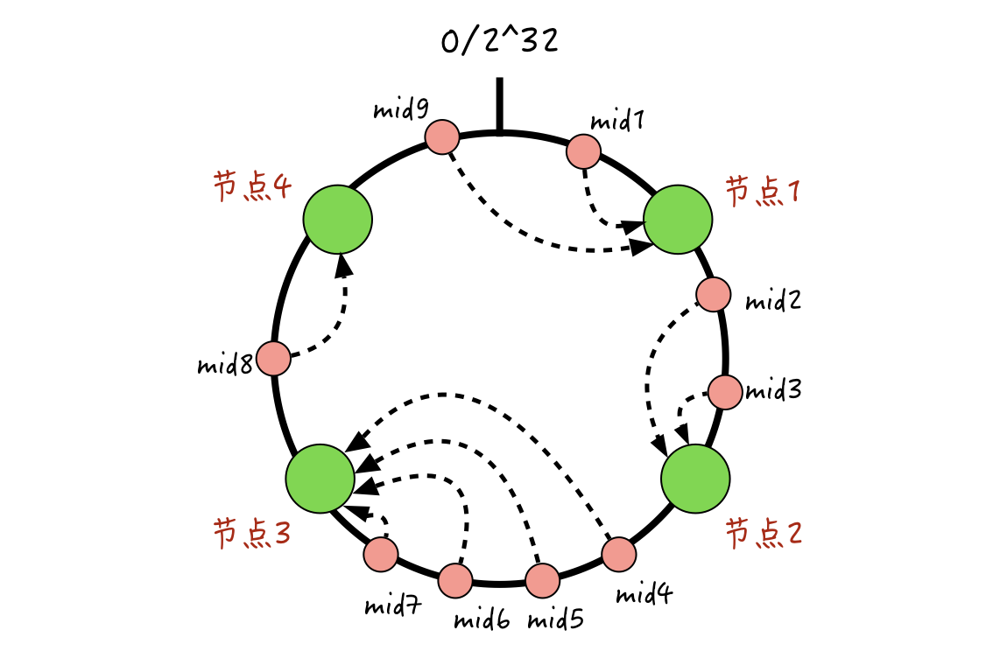
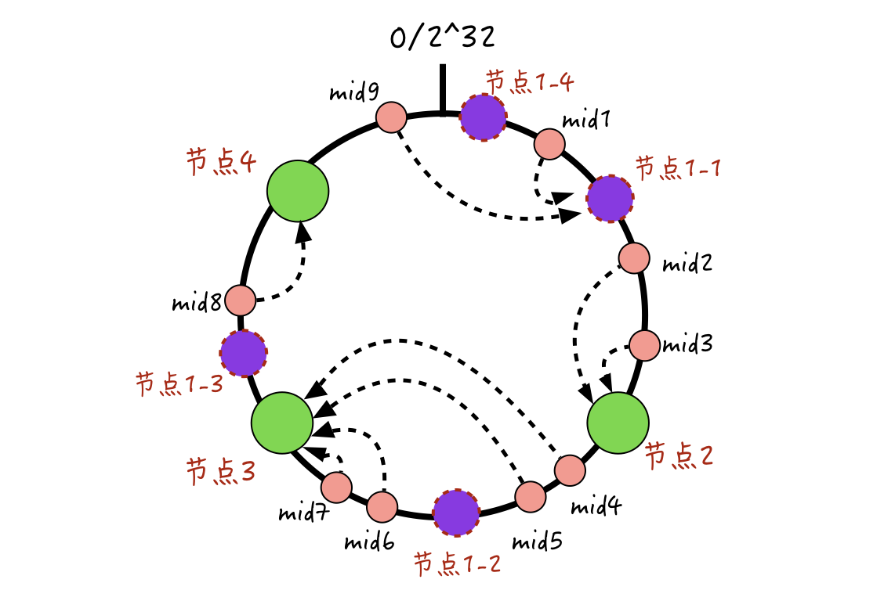
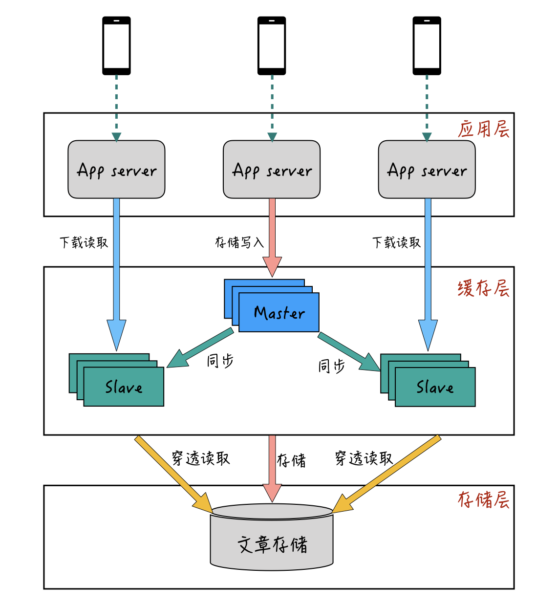
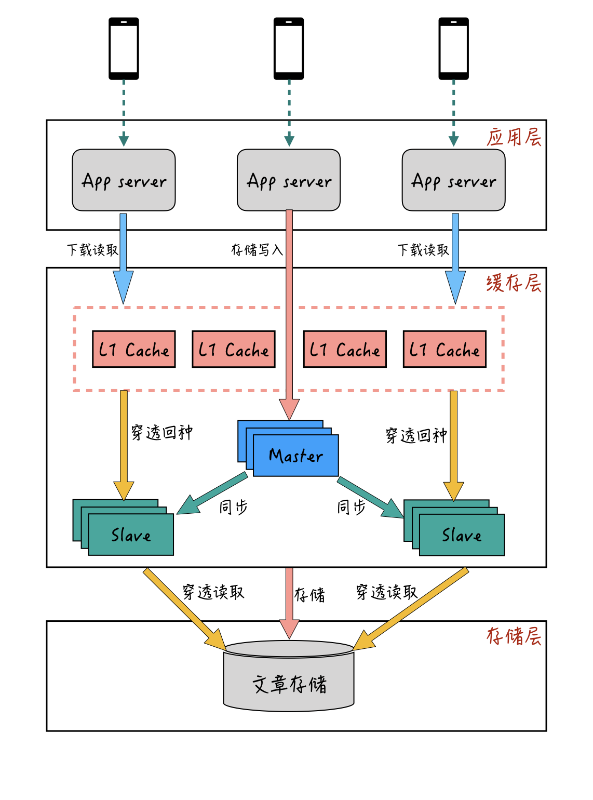
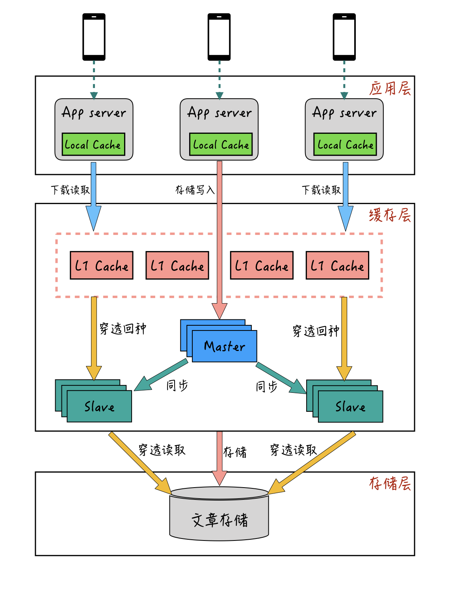

- 00 开篇词 搞懂“实时交互”的IM技术，将会有什么新机遇？.md.html
- 01 架构与特性：一个完整的IM系统是怎样的？.md.html
- 02 消息收发架构：为你的App，加上实时通信功能.md.html
- 03 轮询与长连接：如何解决消息的实时到达问题？.md.html
- 04 ACK机制：如何保证消息的可靠投递？.md.html
- 05 消息序号生成器：如何保证你的消息不会乱序？.md.html
- 06 HttpDNS和TLS：你的消息聊天真的安全吗？.md.html
- 07 分布式锁和原子性：你看到的未读消息提醒是真的吗？.md.html
- 08 智能心跳机制：解决网络的不确定性.md.html
- 09 分布式一致性：让你的消息支持多终端漫游.md.html
- 10 自动智能扩缩容：直播互动场景中峰值流量的应对.md.html
- 11 期中实战：动手写一个简易版的IM系统.md.html
- 12 服务高可用：保证核心链路稳定性的流控和熔断机制.md.html
- 13 HTTP Tunnel：复杂网络下消息通道高可用设计的思考.md.html
- 14 分片上传：如何让你的图片、音视频消息发送得更快？.md.html
- 15 CDN加速：如何让你的图片、视频、语音消息浏览播放不卡？.md.html
- 16 APNs：聊一聊第三方系统级消息通道的事.md.html
- 17 Cache：多级缓存架构在消息系统中的应用.md.html
- 18 Docker容器化：说一说IM系统中模块水平扩展的实现.md.html
- 19 端到端Trace：消息收发链路的监控体系搭建.md.html
- 20 存储和并发：万人群聊系统设计中的几个难点.md.html
- 21 期末实战：为你的简约版IM系统，加上功能.md.html
- 22 答疑解惑：不同即时消息场景下架构实现上的异同.md.html
- 结束语 真正的高贵，不是优于别人，而是优于过去的自己.md.html
- 捐赠
17 Cache：多级缓存架构在消息系统中的应用
你好，我是袁武林。
今天，我要带你了解的是一项在IM系统中相对比较通用的、使用比较高频的，而且对系统性能提升非常明显的技术：缓存。
说到缓存，你应该不陌生。相对于磁盘操作，基于内存的缓存对耗时敏感的高并发应用来说，在性能方面的提升是非常明显的。
下面是谷歌的技术奠基人杰夫·狄恩（Jeff Dean）给出的一些计算机相关的硬件指标，虽然有些数据可能由于时间太久不够准确，但大致的量级基本还是一致的。
- L1 cache reference 0.5 ns
- Branch mispredict 5 ns
- L2 cache reference 7 ns
- Mutex lock/unlock 100 ns
- Main memory reference 100 ns
- Compress 1K bytes with Zippy 10,000 ns
- Send 2K bytes over 1 Gbps network 20,000 ns
- Read 1 MB sequentially from memory 250,000 ns
- Round trip within same datacenter 500,000 ns
- Disk seek 10,000,000 ns
- Read 1 MB sequentially from network 10,000,000 ns
- Read 1 MB sequentially from disk 30,000,000 ns
- Send packet CA->Netherlands->CA 150,000,000 ns
可以看到，同样是1MB的数据读取，从磁盘读取的耗时，比从内存读取的耗时相差近100倍，这也是为什么业界常说“处理高并发的三板斧是缓存、降级和限流”了。
使用缓存虽然能够给我们带来诸多性能上的收益，但存在一个问题是缓存的资源成本非常高。因此，在IM系统中对于缓存的使用，就需要我们左右互搏地在“缓存命中率”和“缓存使用量”两大指标间不断均衡。
在今天的课程中，我会围绕IM系统中缓存的使用，来聊一聊在使用过程中容易碰到的一些问题及相应的解决方案。
缓存的分布式算法
对于大规模分布式服务来说，大部分缓存的使用都是多实例分布式部署的。接下来，我们就先来了解一下缓存常见的两种分布式算法：取模求余与一致性哈希。
取模求余
取模求余的算法比较简单。比如说，用于存储消息内容的缓存，如果采用取模求余，就可以简单地使用消息ID对缓存实例的数量进行取模求余。
如下图所示：如果消息ID哈希后对缓存节点取模求余，余数是多少，就缓存到哪个节点上。- 
取模求余的分布式算法在实现上非常简单。但存在的问题是：如果某一个节点宕机或者加入新的节点，节点数量发生变化后，Hash后取模求余的结果就可能和以前不一样了。由此导致的后果是：加减节点后，缓存命中率下降严重。
一致性哈希
为了解决这个问题，业界常用的另一种缓存分布式算法是一致性哈希。它是1997年麻省理工学院提出的一种算法，目前主要应用在分布式缓存场景中。
一致性哈希的算法是：把全量的缓存空间分成2的32次方个区域，这些区域组合成一个环形的存储结构；每一个缓存的消息ID，都可以通过哈希算法，转化为一个32位的二进制数，也就是对应这2的32次方个缓存区域中的某一个；缓存的节点也遵循同样的哈希算法（比如利用节点的IP来哈希），这些缓存节点也都能被映射到2的32次方个区域中的某一个。
那么，如何让消息ID和具体的缓存节点对应起来呢？
很简单，每一个映射完的消息ID，我们按顺时针旋转，找到离它最近的同样映射完的缓存节点，该节点就是消息ID对应的缓存节点。大概规则我画了一个图，你可以参考一下：- 
那么，为什么一致性哈希能够解决取模求余算法下，加减节点带来的命中率突降的问题呢？
结合上图，我们一起来看一下。假设已经存在了4个缓存节点，现在新增加一个节点5，那么本来相应会落到节点1的mid1和mid9，可能会由于节点5的加入，有的落入到节点5，有的还是落入到节点1；落入到新增的节点5的消息会被miss掉，但是仍然落到节点1的消息还是能命中之前的缓存的。
另外，其他的节点2、3、4对应的这些消息还是能保持不变的，所以整体缓存的命中率，相比取模取余算法波动会小很多。
同样，如果某一个节点宕机的话，一致性哈希也能保证，只会有小部分消息的缓存归属节点发生变化，大部分仍然能保持不变。
数据倾斜
一致性哈希既然解决了加减节点带来的命中率下降的问题，那么是不是这种算法，就是缓存分布式算法的完美方案呢？
这里我们会发现，一致性哈希算法中，如果节点比较少，会容易出现节点间数据不均衡的情况，发生数据倾斜；如果节点很多，相应的消息就能在多个节点上分布得更均匀。
但在实际的线上业务中，部署的缓存机器节点是很有限的。
所以，为了解决物理节点少导致节点间数据倾斜的问题，我们还可以引入虚拟节点，来人为地创造更多缓存节点，以此让数据分布更加均匀。
虚拟节点的大概实现过程，你可以参考下图：- 
我们为每一个物理节点分配多个虚拟节点，比如在上图这里，给节点1虚拟出4个节点。当消息进行缓存哈希定位时，如果落到了这个物理节点上的任意一个虚拟节点，那么就表示，真正的缓存存储位置在这个物理节点上，然后服务端就可以从这个物理节点上进行数据的读写了。
如上面这个例子，本来都落在节点3的4条消息mid4、mid5、mid6、mid7，在加入节点1的虚拟节点后，mid4和mid5落到了虚拟节点1-2上，这样mid4和mid5就被分配到物理节点1上了。可见，通过这种方式，能更好地打散数据的分布，解决节点间数据不平衡的问题。
缓存热点问题
通过一致性哈希配合虚拟节点，我们解决了节点快速扩容和宕机，导致命中率下降的问题及节点间数据倾斜的问题。但在IM的一些场景里，还可能会出现单一资源热点的问题。
比如，一个超级大V给他的粉丝群发了一篇精心编写的长文章，可能一瞬间服务端会有上万的文章阅读请求涌入。由于这些长文章都是作为富文本进行存储的，所以存储的数据较大，有的文章都超过1MB，而且用户还需要随时能够修改文章，也不好通过CDN来进行分发。
那么，我们如何去解决这种缓存热点问题呢？
多级缓存架构-主从模式
我以上面的“长文章流量热点”的例子来说明一下。为了防止文章下载阅读出现热点时，造成后端存储服务的压力太大，我们一般会通过缓存来进行下载时的加速。比如说，我们可以通过文章的唯一ID来进行哈希，并且通过缓存的一主多从模式来进行部署，主从模式的部署大概如下图：- 
一般来说，主从模式下，主库只用于数据写入和更新，从库只用于数据读取。当然，这个也不是一定的。
比如，在写多读少的场景下，也可以让主库承担一部分的数据读取工作。当缓存的数据读取QPS比较大的情况下，可以通过增加从库的方式来提升整体缓存层的抗读取能力。
主从模式是最常见的、使用最多的缓存应用模式。但是主从模式在某些突发流量的场景下会存在一些问题，就比如刚刚提到的“长文章流量热点”问题。
我们对某篇长文章的唯一ID来进行哈希，在主从模式下，一篇文章只会映射到一个从库节点上。虽然能够通过增加从库副本数来提升服务端对一篇文章的读取能力，但由于文章大小比较大，即使是多从库副本，对于千兆网卡的从库实例机器来说，带宽层面也很难抗住这个热点。举个例子，单台机器120MB带宽，对于1MB大小的文章来说，如果QPS到1000的话，至少需要8个实例才可以抗住。
另外，多从库副本是对主库数据的完整拷贝，从成本上考虑也是非常不划算的。除了带宽问题，对于某些QPS很高的资源请求来说，如果采用的是单主单从结构，一旦从库宕机，瞬间会有大量请求直接穿透到DB存储层，可能直接会导致资源不可用。
多级缓存架构-L1+主从模式
为了解决主从模式下，单点峰值过高导致单机带宽和热点数据在从库宕机后，造成后端资源瞬时压力的问题，我们可以参考CPU和主存的结构，在主从缓存结构前面再增加一层L1缓存层。
L1缓存，顾名思义一般它的容量会比较小，用于缓存极热的数据。那么，为什么L1缓存可以解决主从模式下的带宽问题和穿透问题呢？
我们来看一下，L1+主从模式的部署和访问形式：- 
L1缓存作为最前端的缓存层，在用户请求的时候，会先从L1缓存进行查询。如果L1缓存中没有，再从主从缓存里查询，查询到的结果也会回种一份到L1缓存中。
与主从缓存模式不一样的地方是：L1缓存有分组的概念，一组L1可以有多个节点，每一组L1缓存都是一份全量的热数据，一个系统可以提供多组L1缓存，同一个数据的请求会轮流落到每一组L1里面。
比如同一个文章ID，第一次请求会落到第一组L1缓存，第二次请求可能就落到第二组L1缓存。通过穿透后的回种，最后每一组L1缓存，都会缓存到同一篇文章。通过这种方式，同一篇文章就有多个L1缓存节点来抗读取的请求量了。
而且，L1缓存一般采用LRU（Least Recently Used）方式进行淘汰，这样既能减少L1缓存的内存使用量，也能保证热点数据不会被淘汰掉。并且，采用L1+主从的双层模式，即使有某一层节点出现宕机的情况，也不会导致请求都穿透到后端存储上，导致资源出现问题。
多级缓存架构-本地缓存+L1+主从的多层模式
通过L1缓存+主从缓存的双层架构，我们用较少的资源解决了热点峰值的带宽问题和单点穿透问题。
但有的时候，面对一些极热的热点峰值，我们可能需要增加多组L1才能抗住带宽的需要。不过内存毕竟是比较昂贵的成本，所以有没有更好的平衡极热峰值和缓存成本的方法呢？
对于大部分请求量较大的应用来说，应用层机器的部署一般不会太少。如果我们的应用服务器本身也能够承担一部分数据缓存的工作，就能充分利用应用层机器的带宽和极少的内存，来低成本地解决带宽问题了。那么，这种方式是否可以实现呢？
答案是可以的，这种本地缓存+L1缓存+主从缓存的多级缓存模式，也是业界比较成熟的方案了。多级缓存模式的整体流程大概如下图：- 
本地缓存一般位于应用服务器的部署机器上，使用应用服务器本身的少量内存。它是应用层获取数据的第一道缓存，应用层获取数据时先访问本地缓存，如果未命中，再通过远程从L1缓存层获取，最终获取到的数据再回种到本地缓存中。
通过增加本地缓存，依托应用服务器的多部署节点，基本就能完全解决热点数据带宽的问题。而且，相比较从远程L1缓存获取数据，本地缓存离应用和用户设备更近，性能上也会更好一些。
但是使用本地缓存有一个需要考虑的问题，那就是数据的一致性问题。
还是以“长文章”为例。我们的服务端可能会随时接收到用户需要修改文章内容的请求，这个时候，对于本地缓存来说，由于应用服务器的部署机器随着扩缩容的改变，其数量不一定是固定的，所以修改后的数据如何同步到本地缓存中，就是一个比较复杂和麻烦的事情了。
要解决本地缓存一致性问题，业界比较折中的方式是：对本地缓存采用“短过期时间”的方式，来平衡本地缓存命中率和数据更新一致性的问题。比如说，针对“长文章”的本地缓存，我们可以采用5秒过期的策略，淘汰后再从中央缓存获取新的数据。这种方式对于大部分业务场景来说，在产品层面上也是都能接受的。
小结
好了，下面简单回顾一下今天课程的内容。
首先，我介绍了缓存在高并发应用中的重要性，以及在IM系统中使用的部分场景。然后再带你了解了缓存分布式的两种算法：取模求余和一致性哈希。
- 取模求余算法在实现上非常简单，但存在的问题是，取模求余算法在节点扩容和宕机后会出现震荡，缓存命中率会严重降低。
- 一致性哈希算法解决了节点增删时震荡的问题，并通过虚拟节点的引入，缓解了“数据倾斜”的情况。
最后，我着重介绍了业界通用的三种分布式缓存的常见架构。
- 一种是主从模式。简单的主从模式最常见，但是在面对峰值热点流量时，容易出现带宽问题，也存在缓存节点宕机后穿透到存储层的问题。
- 第二种是L1+主从模式。通过增加L1缓存层，以并行的多组小容量的L1缓存，解决了单一热点的带宽问题，也避免了单一节点宕机后容易穿透到DB存储层的情况。
- 最后一种是本地缓存+L1+主从的多层模式。作为低成本的解决方案，我们在L1+主从模式的基础上，引入了本地缓存。本地缓存依托应用服务器的本机少量内存，既提升了资源的有效利用，也彻底解决了带宽的问题。同时在性能方面，也比远程缓存获取更加优秀。对于本地缓存的数据一致性问题，我们可以通过“短过期时间”来平衡缓存命中率和数据一致性。
面对高并发业务带来的流量压力，我们不可否认的是，缓存的使用是目前为止最有效的提升系统整体性能的手段。作为系统优化的一把利器，如何用好这个强大的工具，是你需要去不断思考和学习的。希望今天介绍的这几种缓存使用的姿势，能够让你有所收获，并能在自己的业务中去尝试实践。
最后给你留一道思考题：
L1+主从模式下，如果热点数据都被L1缓存层拦截命中，会导致主从缓存层相应的这个热点数据，由于长时间得不到读取而被LRU淘汰掉。这样，如果下线L1缓存，还是会有不少的请求直接穿透到DB存储层。那么有没有办法，能够让主从缓存在有L1缓存层的情况下，依旧能保持数据热度？
以上就是今天课程的内容，欢迎你给我留言，我们可以在留言区一起讨论，感谢你的收听，我们下期再见。
© 2019 - 2023 Liangliang Lee. Powered by gin and hexo-theme-book.